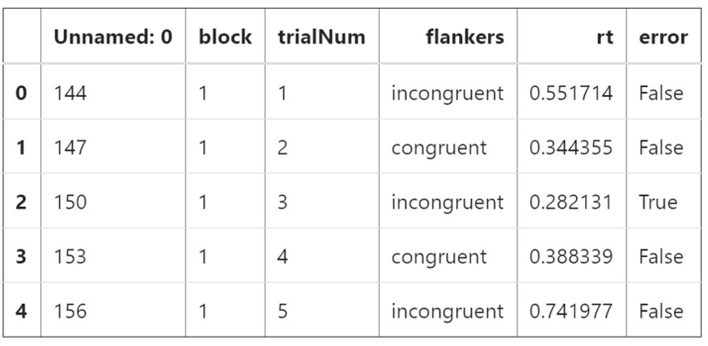
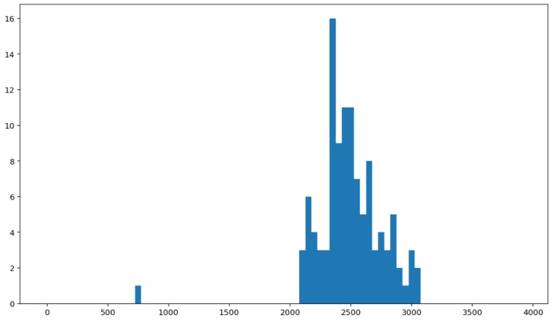
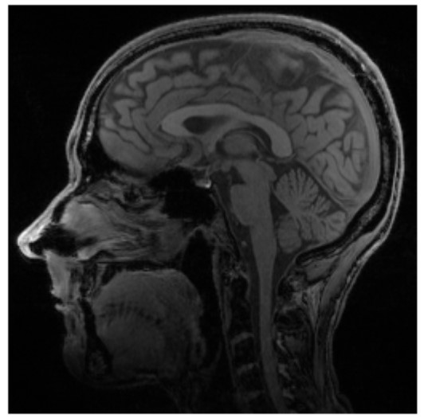
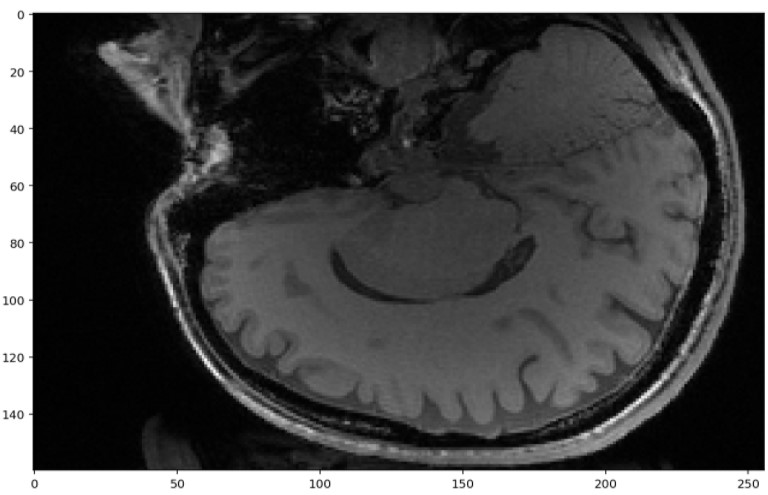
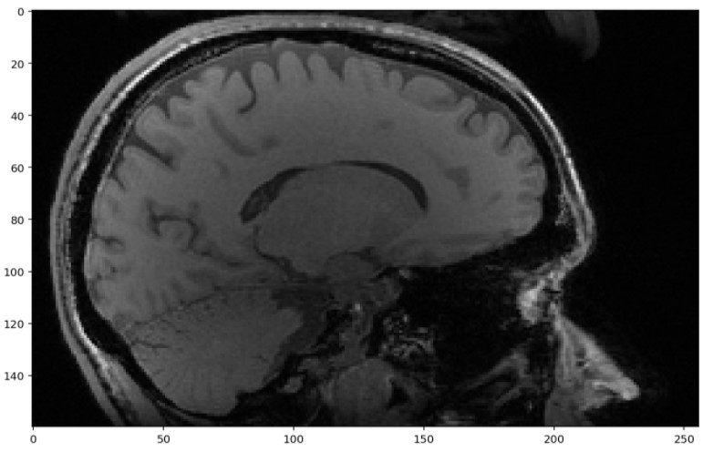

Nour Mohamed's Portofolio
A showcase of my abilities using Python.

IDs = ['s10', 's12', 's13', 's14', 's15']
The purpose of this question is to read in the files above in a for loop to find the mean reaction time for each partiant, in millisecond.
We start by creating an empty variable to append your converted values to.
val = [ ]
Write your loop below:
for ID in IDs :
filename = ID + '.csv'
This line is necessary to turn every ID into filenames
val = pd.read_csv(filename)
This line is used to read in every file.
val_rt_ms = [ ]
This array will contain all reaction times in milliseconds.
for x in val['rt']
This for loop will be used to load all rt in millisecond into the empty array above.
val_rt_ms.append(x * 1000)
This line is used to conevrts the values into milliseconds.
val['rt'] = val_rt_ms
This line switches all columns in the original dataframe reaction time column into the millisecond values converted above.
congruent = val.loc[(val['flankers'] == 'congruent')]
This lines attaches all the rows containing congruent data to the congruent array.
print ('The mean reaction time for the congruent trials is' + str(round(congruent['rt'].mean( ), 3)) + 'ms')
This line is used to round reaction time to 3 decimals and print a line which makes is easy to read the data for each participant.
>Output = The mean reaction time for the congruent trials is 416.08 ms

The following is a list of reaction times from assignment 2
rt = ['0.39425281', '0.44209436', '0.53476437', '0.56590672']
The following is a list of names I created corresponding to the above reaction times:
Participants = ['John', 'Connor', 'Mary', 'Sam']
To create a dictionary which will be useful to acces the data easier, we create a dictionnary:
Reactiontimes = {'John' : '0.39425281', 'Connor' : '0.44209436', 'Mary' : '0.53476437', 'Sam' : '0.56590672'}
To get the values of the reaction times of one of the participants we use the following code:
> Output: '0.39425281'print(Reactiontimes['John'])
To take it a step further, a couple functions can be used to showcase the variability Python posses in dealing with dictionaries.
del(Reactiontimes['John'])
This deleltes the key for the John and its value from the dictionary.

Pandas is a powerful tool, which can be used to easily manipulate data structures and analyze data.
import pandas as pd
This line is used to import pandas
dat= pd.read_csv('s10.csv')
This line converts comma-separated-values (csv) into a pandas dataframe, which is way easier to use and manipulate as it put the data into table form.
dat.head()
This function is used to view the beginning rows of the pandas DataFrame created 
One of the main steps in being ablle to analyze data using Pandas, is cleaning the data:
df.isna().sum()
This gives us a summary of the missing values in each column
df.dropna()
This is used to completely remove rows which contain missing values.
df = df[df.block != 'practice']
This line removes all practice trials from the table.
Such pandas DataFrame can be used for various statisical analysis
dat['rt'][0:25].mean()
Here I calculated the mean reaction times for the first 25 trials
dat[dat.flankers=='congruent']['rt'].mean())
> Output: 416.0478079416664 > Output: 405.6557296799999

Plotting with Python requires matplotlip which is a powerful tool to make visualizing data easier.
import matplotlib.pyplot as plt
This line is required to call in the matplotlib tool
plt.xlabel('RT')
plt.ylabel('Count')
plt.hist(rt, bins= 20)
plt.show()plt.title('Distribution of RTs')

Compare the sales in each location by genre of game.
Genresales = df.groupby(['Genre']).sum().loc[:, 'NA_Sales':'Global_Sales']

The following is a comparision of Wii sales across different locations
print(Wiisales) Wiisales = df.groupby(['Platform']).sum().loc['Wii', 'NA_Sales':'Global_Sales']

To be even more selective, we can find the percentage of Wii sales in North America alone.
>Output: 54.78628697219202 print(Wiisales['NA_Sales']/ Wiisales['Global_Sales'] *100
Therefore 54.8% of Wii sales are in North America
For assignment 4, the goal was to analyze the neuronal activity in different contrast levels to see different spikes.
In order to do so, I began by using PSTH; which generated a histogram representing the frequency of spike occurance at a specific contract level
contr= 100
cond= 'CTRL'
spike_times=df['time'][(df['contrast']== contr) & (df['condition']== cond) & (df['spike']== 1)]
spike_count, bins = np.histogram(spike_times, bins=time_bins)
plt.bar(bins[:-1], spike_count, width=hist_bin_width)
plt.show() fig = plt.figure()
The code above was used to generate the PSTH at 100% contrast below. 
In order to get a summary across multiple contrast levels, a heat map was the method used.
subplot_counter = 1
for cond in cond_labels:
ax = fig.add_subplot(1, len(cond_labels), subplot_counter)
az = plt.imshow(psth_df.loc[cond], aspect=5,interpolation='bilinear', cmap='magma', origin='lower')
plt.title(cond)
cb = fig.colorbar(az, shrink = 0.1)
cb.ax.set_ylabel('Number on Spikes')
xticks = range(0, len(time_bins), 10)
plt.xticks(xticks,time_bins[xticks])
plt.xlabel('Time (ms)')
plt.yticks([x for x,y in enumerate(contr_labels)], [x for x in contr_labels])
if cond == cond_labels[0]:
plt.ylabel('Stimulus Contrast')
subplot_counter += 1
plt.show() fig = plt.figure(figsize=[15,30])

The generation of the heta map is a powerful way of getting a compact summary of all your results.
Using specific colours, and interpolation allows you do clearly see the resutls across multiple contrast levels in one graph
When working with an MRI, many library interfaces need to be imported first.
import imageio
import scipy.ndimage as ndi
import scipy.stats
import nibabel as nib
import numpy as np
import matplotlib.pyplot as plt
The imageio library is used to read in a wide range of image data
brain_img = imageio.imread('Anat001.20040930.2.MPRAGE_T1_SAGITTAL.0080.dcm')

The following set of code is used to view the MRI image, uising the grayscale colours.
plt.imshow(brain_img, cmap='gray')
plt.axis('off')
plt.show()
Furthermore, the picture can be sliced to get different views of the brain MRI.
plt.imshow(vol[:,:,80], cmap='gray')

The picture can be modified using the scipy.ndimage library for multidimensional image processing.
img = ndi.rotate(vol[:,:,80], angle=180, reshape=True)

plt.imshow(img, cmap='gray')